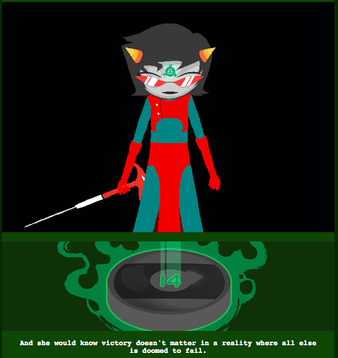

Wait wait wait wait wait hold up a second.
Was everything that just happened some kind of, uh, incorrect guess from Doc Scratch or something? So Terezi didn’t let Vriska go confront Jack because she couldn’t stand to kill her, and Jack didn’t follow Vriska’s trail to the meteor, and Jack didn’t kill Terezi and Karkat, and Vriska didn’t fight but ultimately lose to Jack upon returning there?
Terezi did kill Vriska? Probably not permanently because it’s not just or heroic; Vriska’s a dick but I don’t think killing her would count as justice, since Terezi did it to prevent something stupid.
Poor Karkat is really just having the worst time. Also, turns out he’s the Knight? Interesting. I don’t think I’ve gotten his title yet!